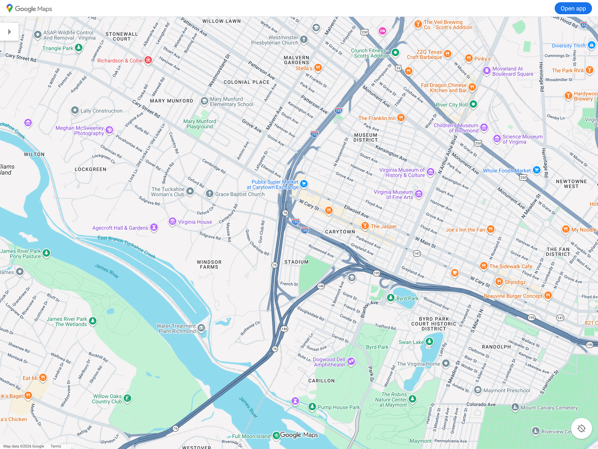
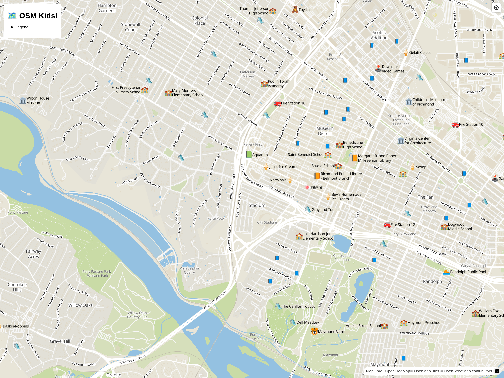

class: center, middle # OpenStreetMap is for the Children ### Daniel Schep --- # Who am I? * Dad * Map Nerd * Software Engineer * OSM mapper --- # OSM, the best resource for geodata Where can I find... * Playgrounds? * Schools? * Museums? * Toy Stores? * and on and on...? --- # But most maps are made for grown ups! **BORING!!** <p></p> --- # Introducing OSM.Kids! https://osm.kids is an interactive webmap built with children and their parents/caretakers in mind. <p></p> --- # High zoom Local places of interest: * 🐟 Aquariums * 📗 Book Shops * 🌻 Botanic Gardens * 🍬 Candy Shops * 🚒 Fire Stations * ♟️ Game Shops * 🍦 Ice Cream Shops * 📙 Libraries * <small>📘</small> Little Libraries * 🛝 Playgrounds * 🏊 Pools * 🎡 Theme Parks * 🏫 Schools * 🧸 Toy Shops * 🚂 Train Stations * 🏛️ Museums * 🕹️ Video Game Shops * 🐯 Zoos --- # Middle zoom 🏙️ cities # Low zoom 🇺🇸 🇧🇷 🇲🇽 🇪🇬 🇰🇪 🇮🇳 🇨🇳 Countries! --- # How it's made ## Tiles A custom Planetiler YAML profile. ## Frontend / Style An Ultra query & emoji sprites --- # Next? * Community involvement * User feedback * More POI types * Bespoke frontend (IE: not Ultra) * Customized base-map style? ## Links * https://osm.kids * https://github.com/maprva/osm-kids